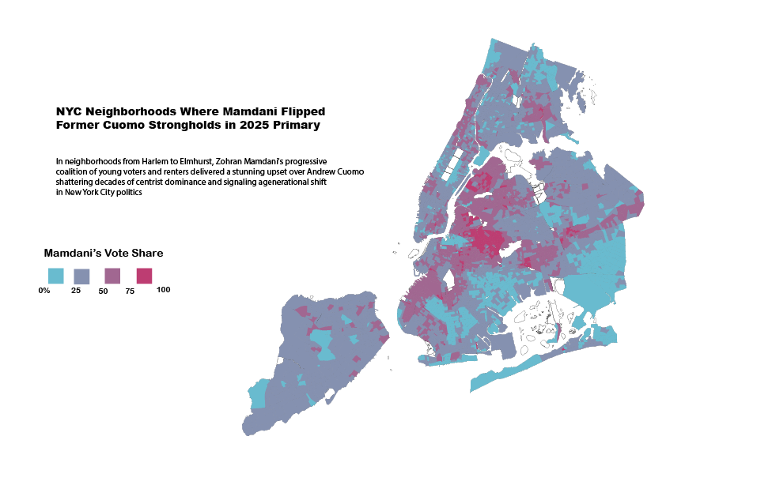

At Columbia's MS Data Journalism programme, I built fluency in Python, SQL, R — not as a side skill, but as a reporting tool. I scraped, cleaned, and visualised datasets from scratch, including a live database of Chinese loans to Africa (2000–2023) built for Boston University's Global Development Policy Center. I have also reported on how New York City's synthetic turf fields are reshaping the health and environment of the communities they sit in.
Data stories
Effect of US–China Tariffs on the Toy Industry via Labubus →
The demented nine-toothed face of tariff troubles
Visualizing Ivy Funds →
Federal cuts on Ivy Leagues: why they matter
NYC COIB Fines →
City agencies and conflict-of-interest fines, 2014–25
California Fire Suppression Funds →
CAL FIRE / NIFC costs, 2015–2024
Chinese Loans to Africa Database →
Live interactive database built for BU's Global Development Policy Center, 2000–2023
Maps




Other stories
City Swaps Soil for Synthetic →
How NYC's synthetic turf fields are affecting the health and environment of local communities
First Legal Cannabis Dispensaries in Uptown →
Inwood & Washington Heights go legal